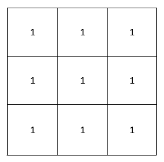

侵蚀图像
侵蚀是图像处理中的基本形态学操作。顾名思义，此操作会侵蚀图像中前景像素的边界。在执行该腐蚀操作之后，图像中的对象变小，而对象中的孔（如果有）会变大。在该技术中，将所得图像的每个像素值计算为由内核定义的像素邻域的最小值。对于彩色图像，每个彩色平面都是独立处理的。
3 x 3内核用于腐蚀操作
下图显示了如何使用上述3 x 3内核腐蚀图像。同样，你也可以用5 x 5、7 x 7等内核侵蚀图像。
用于腐蚀操作的3x3核心

使用OpenCV侵蚀图像
OpenCV具有内置功能，可侵蚀指定内核大小的图像。这个简单的程序演示了如何使用OpenCV以3 x 3和5 x 5核心侵蚀图像。#include <opencv2/opencv.hpp>
#include <iostream>
using namespace cv;
using namespace std;
int main(int argc, char** argv)
{
// 读取图像
Mat image = imread("Lotus.jpeg");
// 检测失败
if (image.empty())
{
cout << "Could not open or find the image" << endl;
cin.get(); //等待键盘
return -1;
}
//使用3x3核心侵蚀图像
Mat image_eroded_with_3x3_kernel;
erode(image, image_eroded_with_3x3_kernel, getStructuringElement(MORPH_RECT, Size(3, 3)));
//使用5x5核心侵蚀图像
Mat image_eroded_with_5x5_kernel;
erode(image, image_eroded_with_5x5_kernel, getStructuringElement(MORPH_RECT, Size(5, 5)));
//创建窗口
namedWindow("原图");
namedWindow("3x3核心侵蚀图像");
namedWindow("5x5核心侵蚀图像");
// 显示图像
imshow("原图", image);
imshow("3x3核心侵蚀图像", image_eroded_with_3x3_kernel);
imshow("5x5核心侵蚀图像", image_eroded_with_5x5_kernel);
waitKey(0); // 等待键盘
destroyAllWindows(); //毁灭窗口
return 0;
}
复制粘贴以上代码，注意把以上的"Lotus.jpeg"换成有效的图像路径。编译运行后，效果如下：
原图
.png)
使用3x3核心侵蚀图像

使用5x5核心侵蚀图像

解说
Mat image_eroded_with_3x3_kernel; erode(image, image_eroded_with_3x3_kernel, getStructuringElement(MORPH_RECT, Size(3, 3)));erode()函数使用指定的内核腐蚀图像，该内核确定在其上拍摄最小值的像素的邻域。getStructuringElement(MORPH_RECT，Size(3，3))函数用于获取此形态运算的大小为3 x 3的矩形核。结果图像存储在image_eroded_with_3x3_kernel中。如果图像包含一个以上的通道（彩色图像具有3个或4个通道），则每个通道都会独立处理。
Mat image_eroded_with_5x5_kernel; erode(image, image_eroded_with_5x5_kernel, getStructuringElement(MORPH_RECT, Size(5, 5)));erode()函数使用指定的内核腐蚀图像，该内核确定在其上拍摄最小值的像素的邻域。getStructuringElement(MORPH_RECT，Size(5，5))函数用于获取此形态运算的大小为5 x 5的矩形核。结果图像存储在image_eroded_with_5x5_kernel中。如果图像包含一个以上的通道（彩色图像具有3个或4个通道），则每个通道都会独立处理。
void cv::erode(InputArray src, OutputArray dst, InputArray kernel, ] Point anchor = Point(-1,-1), int iterations = 1, int borderType = BORDER_CONSTANT, const Scalar & borderValue = morphologyDefaultBorderValue()) 通过使用特定的结构元素腐蚀图像。 该函数使用指定的结构化元素腐蚀源图像，该结构化元素确定在其上获取最小值的像素邻域的形状 参数 src - 输入图像；通道数可以是任意的，但深度应为CV_8U，CV_16U，CV_16S，CV_32F或CV_64F之一。 dst - 输出图像的大小和类型与src相同。 kernel - 用于侵蚀的结构元素；如果element = Mat（），则使用3 x 3的矩形结构元素。可以使用getStructuringElement创建内核。 anchor - 锚在元素内的位置；默认值（-1，-1）表示锚点位于元素中心。 iterations - 施加腐蚀的次数。 borderType - 像素外推方法 borderValue - 边界不变时的边界值